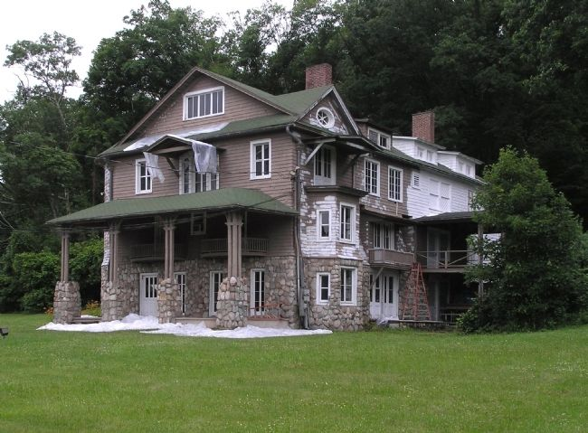

Arisbe
Doing logic in pictures — Peirce's moving pictures of thought, made operational.

Arisbe was the name Charles Sanders Peirce gave to the house where, in his last decades, he worked out the Existential Graphs — a way of doing logic in pictures rather than drawing pictures of logic. This environment carries the name. Here a graph's drawn form and its written form denote one and the same thing, and every transformation is attested so that manifest and meaning keep sounding in the same chord. Beneath all of it lies the blank sheet of assertion — the one thing that, saying nothing, cannot be wrong; everything scribed upon it remains open to challenge.
New here?
Never read an Existential Graph? Start with the four marks — a two-minute
primer with your first graphs drawn by Arisbe itself. No prior logic required.
The three modes
Organon
ὄργανον · “instrument”
The archive. Browse the corpus; read each graph in its linear
and drawn forms; export it in Dau's, Peirce's, or Sowa's hand. Read-only.
Ergasterion
ἐργαστήριον · “workshop”
The workshop. Compose and transform a graph by the rules,
draw it in a chosen style, and send a result to Agon to be tested.
Agon
ἀγών · “contest”
The arena. Test a proposal against a model in the Endoporeutic
Game — an assertion earns its place by withstanding challenge.
The doorway
Import
Admit a linear form from the outside world — transcribed from a
book or pasted from a page — at low warrant: checked for grammar and §3.3
correspondence, bibliographically attributed, and drawn. Not asserted as true.
The book
Help & handbook
The Arisbe book — a guided tour of the three modes, the field guide
to reading and drawing graphs, the calculus and its guarantees, and the full
reference.